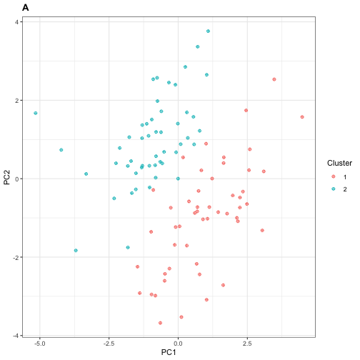

intro.Rmdflinty provides scientists a way to test if their datasets contain multiple subpopulations. This is an important question if the scientist wishes to infer quantities of interest from the dataset, for instance population-level parameters, without overlooking any latent heterogeneities.
Consider the following examples commonly encountered by practitioners.
For each example above, methods have been developed to address the issue described. These methods vary in their degree of success. We won't discuss the successes and limitations of such methods here. We merely want to suggest connections of our methods with some of these settings.
Instead, in this vignette we shall describe our general method of exchangeability and demonstrate its use on simulated data. Along the way, we will delight ourselves with a few morsels of data analysis, including double dipping and runs tests.
This section to be updated.
library(flintyR)
library(tidyverse)
library(doParallel)
registerDoParallel()We start simple. This example is motivated by recent work of Lucy Gao and Daniela Witten, which they presented in the International Seminar on Selective Inference and in the R/Medicine 2020 Virtual Conference respectively.
We simulate \(\mathbf{X}\), a dataset consisting of \(N=100\) samples, where each sample consists of \(P=50\) independent features, each feature a realization of a standard Gaussian random variable. Mathematically, the entries \(x_{np}\overset{\text{iid}}{\sim} N(0,1)\).
## Generate some data
# Set seed for reproducibility
set.seed(420)
X <- matrix(rnorm(5000),
nrow = 100,
ncol = 50)Under such settings \(\mathbf{X}\) is homogeneous and the samples \(\mathbf{x}_1,\ldots,\mathbf{x}_N\) are exchangeable, but if we were handed \(\mathbf{X}\) without knowing its generative mechanism completely, we might want to perform clustering as part of exploratory data analysis.
## Cluster data
X_df <- as.data.frame(scale(X))
X_cluster <- kmeans(X_df, centers = 2, nstart = 25)
# Assign cluster labels
X_df$cluster <- X_cluster$cluster
# Perform PCA to visualize
X_pca <- princomp(X_df[,1:50])
PC1and2 <- X_pca$scores[,1:2] %>% as.data.frame()
PC1and2$cluster <- X_cluster$cluster By performing \(k\)-means clustering with \(k=2\) as shown above, we obtain a cluster assignment. We can visualize this clustering by performing PCA on the samples and plotting the projection of each sample onto its first two principal components.
## Visualize clustering
ggplot(PC1and2, aes(x = Comp.1, y = Comp.2)) +
geom_point(aes(colour = factor(cluster)),
shape = 10) +
theme_bw() +
xlab("PC1") +
ylab("PC2") +
guides(colour=guide_legend(title="Cluster")) +
ggtitle("A") +
theme(plot.title = element_text(face = "bold"))
Next, we perform Wilcoxon rank sum tests between the two populations for each feature, applying Bonferroni correction to control the family-wise error rate (FWER) at \(\alpha=0.05\). Recall that the Wilcoxon rank sum (aka, Mann-Whitney) test is a non-parametric two-sample test for difference in sample distributions.
## Differential analysis
# Split into two clusters
X_df_1 <- X_df %>% filter(cluster == 1)
X_df_2 <- X_df %>% filter(cluster == 2)
# Compute p-values
p_val_vector <- c()
for (j in 1:50) {
# Perform differential analysis on feature j
da_result <- wilcox.test(x = X_df_1[,j],
y = X_df_2[,j])
# Print result if significant
p_val_vector <- c(p_val_vector, da_result$p.value)
if (da_result$p.value < 0.001) {
cat("The p-value for feature ", j, " is ", da_result$p.value, ".\n",
sep = "")
cat("This is significant at FWER = 0.05 after Bonferroni correction.\n")
}
}
#> The p-value for feature 8 is 0.0005319207.
#> This is significant at FWER = 0.05 after Bonferroni correction.
#> The p-value for feature 14 is 0.0001147439.
#> This is significant at FWER = 0.05 after Bonferroni correction.
#> The p-value for feature 22 is 7.798508e-06.
#> This is significant at FWER = 0.05 after Bonferroni correction.
#> The p-value for feature 24 is 3.191586e-07.
#> This is significant at FWER = 0.05 after Bonferroni correction.
#> The p-value for feature 35 is 8.154343e-05.
#> This is significant at FWER = 0.05 after Bonferroni correction.
#> The p-value for feature 38 is 0.000559846.
#> This is significant at FWER = 0.05 after Bonferroni correction.We find six features that are statistically significant, which the user might erroneously report as discriminative features. We can visualize these six features by generating a Manhattan plot below.
## Visualize differential analysis
# Mutate the p-value vector for easier plotting
p_val_vector <- cbind(p_val_vector, 1:50) %>%
as.data.frame() %>%
`colnames<-`(c("p_value","feature")) %>%
select(feature, p_value) %>%
mutate(log_p_value = -log10(p_value),
is_sig = (-log10(p_value) > 3))
# Generate plot
ggplot(p_val_vector, aes(x = feature, y = log_p_value)) +
geom_point(aes(colour = is_sig)) +
theme_bw() +
ylab(expression(-log[10](p))) +
geom_hline(yintercept = 3, lty = "dashed") +
scale_color_manual(values=c("#404040", "#d7191c")) +
ggtitle("B") +
theme(plot.title = element_text(face = "bold"),
legend.position = "none")The process above, in which we first cluster the data and then perform differential analysis, is an example of double dipping.
What is Double Dipping?
Double dipping arises when insufficient care is taken in data analysis that involves multiple stages of computational work. While there are at least three well-documented instances of the phenomenon (Kriegerskorte et al., 2009), here we focus on a two-stage pipeline involving clustering and differential analysis. We dip into the data first by clustering, and then dip again by performing differential analysis on the post-clustering data. This is problematic because the clustering method inherently searches for discriminative features to determine clusters. Thus we should not dip twice, or "double dip."
Fortunately, we can avoid risking double dipping by performing our exchangeability test on the dataset \(\mathbf{X}\) as a first step.
## How to avoid risking double dipping
# Compute p-value for test of homogeneity
the_p_value <- getPValue(X)
cat("The p-value for the exchangeability test is ", the_p_value, ".\n", sep = "")
#> The p-value for the exchangeability test is 0.4868.
if (the_p_value > 0.05) {
cat("No evidence of heterogeneity at alpha = 0.05!\n")
}
#> No evidence of heterogeneity at alpha = 0.05!Note that alternative approaches, which we will not explore here, include selective inference (Gao et al., 2021+). For this alternative approach, in the differential analysis step one computes a \(p\)-value conditioned on the cluster membership obtained from the previous clustering step.